¿Por qué se buscaba el éter y qué resultado habría permitido detectarlo?
01 · IDEA PREDOMINANTE
¿Qué se creía?
En el siglo XIX, la interferencia y la difracción respaldaron la naturaleza ondulatoria de la luz. Maxwell la describió después como onda electromagnética. Muchos físicos consideraban que necesitaba un medio de propagación, el éter luminífero(Díaz López, 2011).
→
02 · PROBLEMA FÍSICO
¿Qué faltaba comprobar?
Si el éter permanecía inmóvil y la Tierra se desplazaba a través de él, debía existir un movimiento relativo, denominado «viento de éter». El problema era determinar si ese movimiento modificaba el tiempo de recorrido de la luz según su dirección (Michelson & Morley, 1887).
→
03 · PRUEBA PROPUESTA
¿Qué podía medirse?
El interferómetro compararía dos trayectorias perpendiculares. Al girarlo, la hipótesis predecía un cambio de los tiempos relativos y, por tanto, un corrimiento periódico de las franjas, medible mediante un micrómetro (Michelson & Morley, 1887).
La cuestión científica no era ver el éter, sino comprobar una consecuencia experimental concreta de su existencia bajo determinadas hipótesis.
Científicos involucrados
Aportes científicos que hicieron posible el experimento de 1887.
Marco previo
Los antecedentes físicos de la investigación.
Marco ondulatorio
Augustin-Jean Fresnel
1788–1827
Sus estudios de interferencia y difracción consolidaron la teoría ondulatoria. Su hipótesis de arrastre parcial del éter buscaba explicar la propagación luminosa en medios en movimiento y fue parte del marco teórico examinado en 1887 (Michelson & Morley, 1887).
Figura 1
Retrato de Augustin-Jean Fresnel
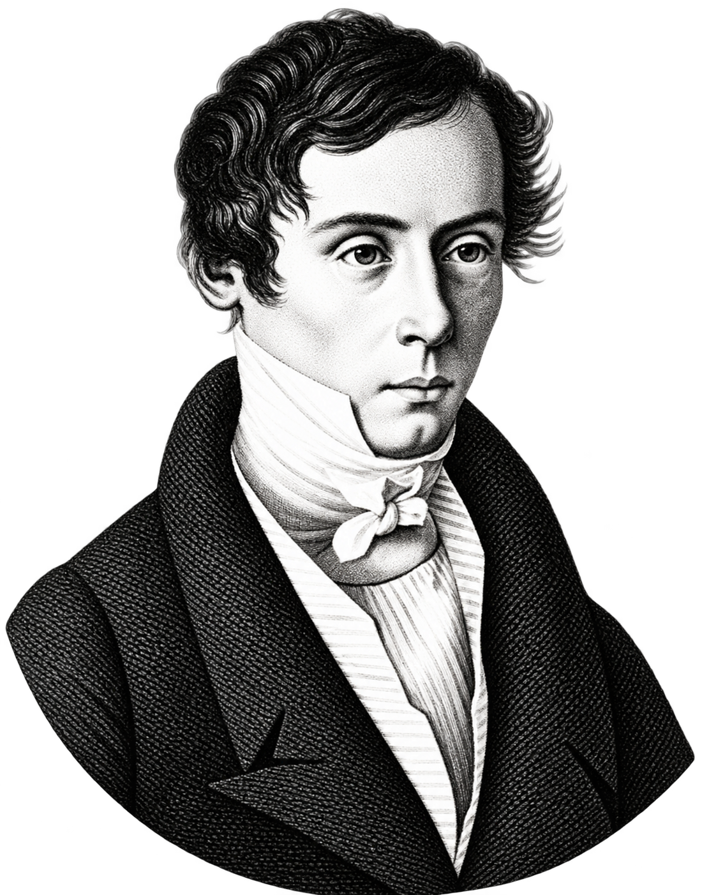
Imagen pendiente
Nota. Grabado histórico; la procedencia concreta se documentará al colocar C1.png.
Teoría electromagnética
James Clerk Maxwell
1831–1879
Sus ecuaciones establecieron la naturaleza electromagnética de la luz. Esta descripción reforzó la pregunta sobre el medio de propagación y sobre la posibilidad de medir el movimiento terrestre respecto del éter (Díaz López, 2011).
Figura 2
Retrato de James Clerk Maxwell
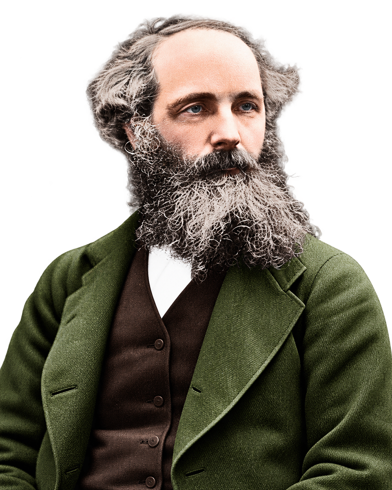
Imagen pendiente
Nota. Retrato histórico; procedencia documental pendiente de confirmar para C2.png.
Desarrollo del experimento
Diseño de 1881, revisión del cálculo y ensayo perfeccionado de 1887.
Diseño y primera medición
Albert A. Michelson
1852–1931
En 1881 construyó un interferómetro para comparar dos recorridos luminosos perpendiculares. Las vibraciones y una predicción teórica sobreestimada limitaron esa primera prueba. En 1887 repitió el estudio con Morley utilizando un equipo más sensible (Michelson & Morley, 1887).
Figura 3
Retrato de Albert A. Michelson
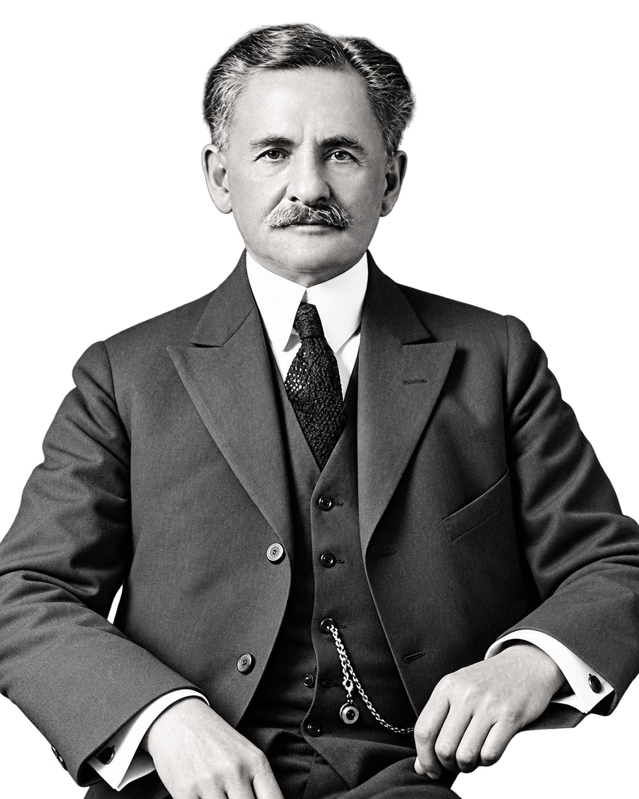
Imagen pendiente
Nota. Retrato histórico; procedencia documental pendiente de confirmar para C3.png.
Corrección del cálculo de 1881
Alfred Potier
1840–1905
Advirtió que el cálculo de 1881 había omitido el movimiento del espejo del brazo transversal. Al corregir la trayectoria oblicua de la luz, la señal prevista se reducía a la mitad, una cuestión reconocida en el análisis posterior (Michelson & Morley, 1887).
Figura 4
Retrato de Alfred Potier
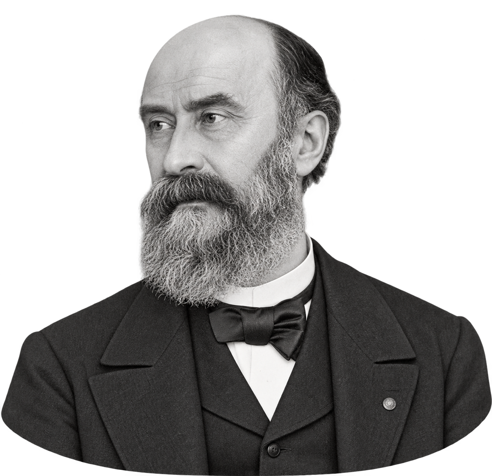
Imagen pendiente
Nota. Retrato auténtico aún no identificado en un archivo verificable; espacio preparado para C5.png.
Perfeccionamiento y registro
Edward W. Morley
1838–1923
Participó en el rediseño de 1887. El instrumento amplió el recorrido óptico con reflexiones múltiples y utilizó una losa flotante sobre mercurio para facilitar un giro estable. Junto a Michelson registró las posiciones de las franjas (Michelson & Morley, 1887).
Figura 5
Retrato de Edward W. Morley
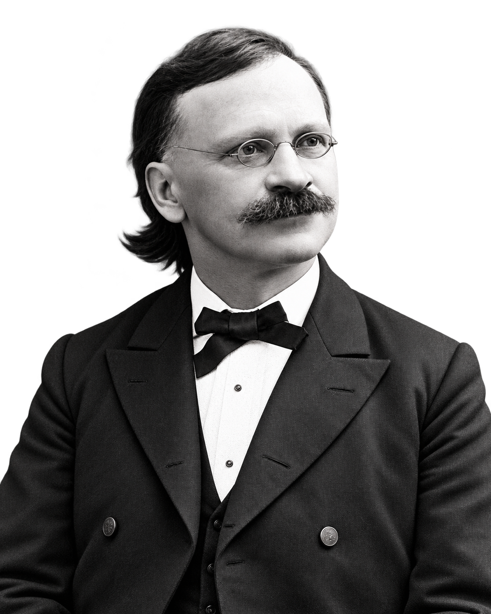
Imagen pendiente
Nota. Fotografía histórica; procedencia documental pendiente de confirmar para C4.png.
Principios físicos
Relaciones ópticas y cinemáticas necesarias para interpretar el corrimiento de las franjas.
Fundamento ondulatorio
Propagación de la luz
La luz se propaga como onda electromagnética. Su frecuencia y longitud de onda permiten relacionar el recorrido óptico con la escala de las franjas.
c: rapidez de la luz en el vacío (m/s); λ0: longitud de onda en el vacío (m); f: frecuencia (Hz).
Cada haz se refleja y vuelve al divisor. La fase acumulada depende de la distancia recorrida y del índice de refracción; la placa compensadora equilibra el recorrido dentro del vidrio.
OPL: longitud de camino óptico (m); n: índice de refracción; ds: elemento de longitud (m); L1, L2: distancias de ida de cada brazo (m). La aproximación considera el mismo medio y componentes ópticos compensados.
Al reunirse, los haces pueden reforzarse o atenuarse según su fase relativa. La superposición produce máximos y mínimos de intensidad observables como franjas.
Máximo: Mínimo:
I: intensidad resultante; I1, I2: intensidades de los haces, con igual polarización; Δφ: fase relativa (rad); m: entero. La fórmula supone ondas coherentes.
Una variación del camino óptico altera el desfase. El cambio equivalente a una longitud de onda desplaza el patrón una franja; las variaciones menores se miden como fracciones de franja.
φ0: desfase constante asociado al montaje (rad); δN: desplazamiento de franjas, que puede ser fraccionario; δ[Δ(OPL)]: variación de diferencia de camino óptico (m).
El modelo histórico suponía un éter inmóvil y velocidades relativas calculadas mediante la cinemática clásica. El recorrido transversal exigía considerar el avance del espejo mientras viajaba la luz.
v: rapidez hipotética del aparato respecto al éter (m/s); u: rapidez relativa de la luz según la composición clásica. Es una predicción histórica, no una ley válida de la luz en relatividad especial.
Para observar interferencia, los haces deben conservar suficiente relación de fase. La luz de sodio facilitó el ajuste inicial; después se igualaron los recorridos para observar franjas con luz blanca.
ℓc: longitud de coherencia (m); τc: tiempo de coherencia (s). Es una relación aproximada en el vacío. La luz blanca posee una longitud de coherencia mucho menor que una fuente casi monocromática.
La Figura 6 representa dos casos de interferencia y las zonas claras u oscuras que pueden distinguirse dentro de un patrón de franjas. Los diagramas son didácticos, no una reproducción histórica.
Figura 6
Interferencia constructiva y destructiva de dos ondas
Las zonas claras y oscuras forman un patrón espacial; constructiva y destructiva describen puntos de ese patrón. Las bandas son esquemáticas, no registros de 1887.
Nota. Elaboración propia; las curvas son esquemáticas y no representan un registro instrumental.
Con estos fundamentos podemos identificar los componentes originales del interferómetro y, más adelante, calcular la variación de franjas que se esperaba encontrar al girarlo.
Montaje experimental
Elementos del interferómetro de 1887
Figura 7
Croquis de dos brazos ópticos: seleccionar un componente
Nota. Diagrama didáctico de los dos brazos perpendiculares, no representación exhaustiva de los espejos usados en 1887. Las reflexiones adicionales y el soporte original se explican al seleccionar los elementos (Michelson & Morley, 1887).
Selecciona cada elemento del croquis para conocer qué se utilizó, por qué se escogió y cómo intervenía en la medición. Cada ficha incluye la reproducción documental correspondiente del artículo de 1887. El croquis representa dos brazos ópticos; el instrumento real añadía espejos para multiplicar los recorridos.
Procedimiento y magnitudes registradas
Una vez alineados los espejos, ajustaban las longitudes de los caminos con ayuda de luz de sodio y recuperaban después las franjas de luz blanca. Hacían girar lentamente el conjunto y registraban con el micrómetro la posición de una franja en 16 orientaciones sucesivas. En cada sesión promediaron seis vueltas; las observaciones se efectuaron cerca del mediodía y hacia las seis de la tarde (Michelson & Morley, 1887).
Variable manipuladaOrientación angular de la losa (θ)Variable registradaPosición de una franja en divisiones del micrómetroRespuesta calculadaDesplazamiento relativo de franjas
Física del fenómeno estudiado
La hipótesis del éter permitía calcular cuánto debían desplazarse las franjas al girar el interferómetro.
Predicción clásica para dos brazos perpendiculares
En el modelo clásico, el interferómetro se mueve con rapidez v respecto de un éter estacionario. El haz paralelo al movimiento tiene velocidades relativas distintas de ida y regreso; el transversal sigue una trayectoria oblicua. Para brazos de longitud efectiva L:
t∥ = L/(c − v) + L/(c + v)
Brazo paralelo: un viaje contra el «viento» y otro a favor.
t⊥ = 2L / √(c2 − v2)
Brazo perpendicular: trayectorias diagonales en el marco clásico del éter.
Para v mucho menor que c, la diferencia entre los tiempos de los dos brazos conduce a una pequeña diferencia de fase. Si se gira el instrumento 90°, se intercambian las orientaciones y se espera un cambio de franjas descrito por la expresión siguiente. La Figura 11 reproduce los dos recorridos ópticos discutidos por los autores; la simulación permite explorar el desplazamiento que predecía el modelo (Michelson & Morley, 1887).
Figura 11
Recorridos de la luz representados por Michelson y Morley en 1887
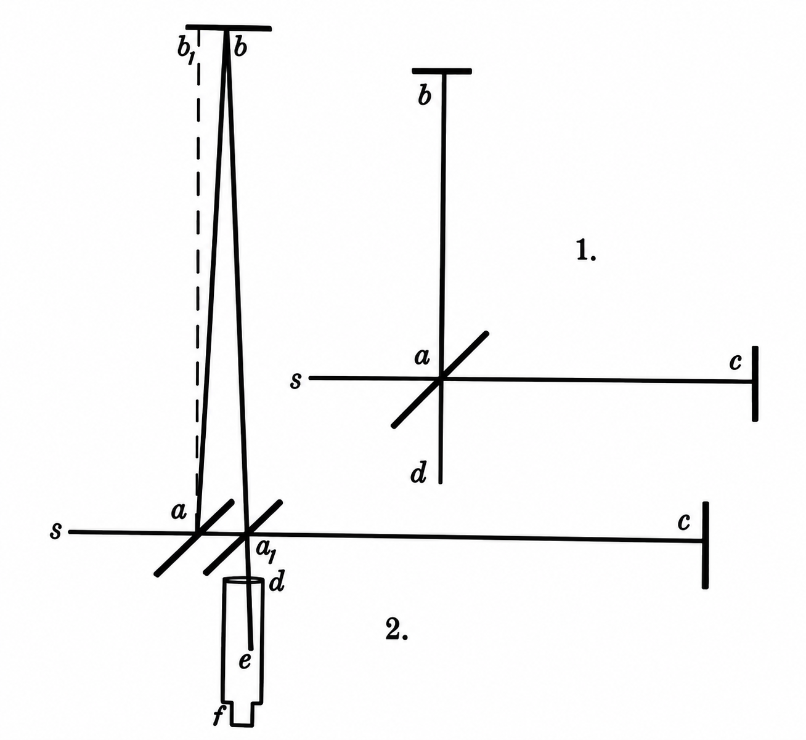
Nota. Reproducción de las figuras 1 y 2 del artículo original. Los autores compararon la geometría de los recorridos para un aparato en reposo y en movimiento respecto del éter (Michelson & Morley, 1887).
L: longitud efectiva de cada brazo · v: rapidez hipotética respecto al éter · λ: longitud de onda · c: rapidez de la luz.
La prueba no consistía en detectar simplemente franjas, sino en comprobar si su posición cambiaba de manera repetible al rotar el aparato. Esa es la diferencia entre observar interferencia y comprobar la hipótesis del éter.
Documento histórico complementarioOtros métodos propuestos en el suplemento de 1887 · Figura 12⌄
En el suplemento, Michelson y Morley examinaron otras posibilidades para estudiar el movimiento relativo, como la reflexión en superficies móviles. Estos esquemas no representan partes del interferómetro utilizado en las observaciones de 1887.(Michelson & Morley, 1887).
Figura 12
Esquemas de métodos alternativos descritos en el suplemento original
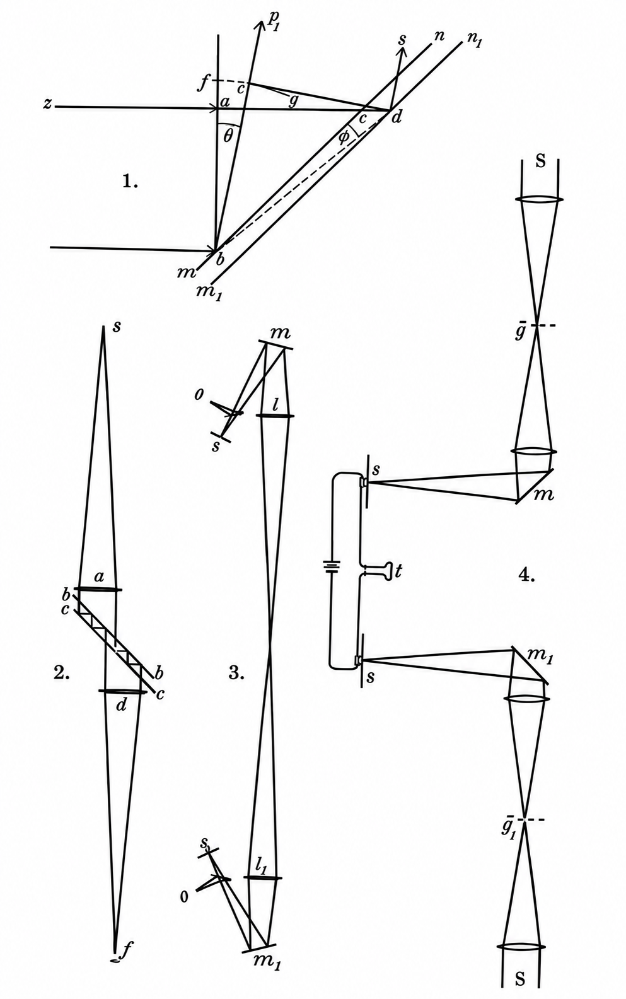
Nota. Reproducción de las figuras 1 a 4 del suplemento publicado por Michelson y Morley (1887). Representan propuestas complementarias, no una reproducción del aparato de medición.
Las franjas se forman en ambos casos. Compara cuánto se desplazarían al girar el aparato: la señal prevista frente al efecto no detectado en 1887.
Franjas de luz blanca · representación óptica didáctica
Patrón ilustrativo: las franjas se desplazan según el modelo clásico.
Desplazamiento según el ánguloModelo teórico vs. resultado nulo
Predicción del éterResultado nuloÁngulo seleccionado
Desplazamiento previsto al girar 90° · modelo clásico
0.401 franjas
Desplazamiento relativo a 0° en el modelo elegido0.000 franjas
En 1887 se observaron franjas; no apareció el desplazamiento sistemático previsto al rotar el montaje.
Nota. Simulación didáctica basada en las predicciones del artículo de Michelson y Morley (1887). La curva del éter indica el desplazamiento angular previsto; la línea de resultado nulo representa la ausencia idealizada de esa señal. En el segundo modo las franjas permanecen estables: no se reproducen las pequeñas variaciones de las observaciones históricas ni se presentan datos experimentales como si fueran simulados.
Resultados del experimento
Comparación entre el corrimiento previsto por el éter estacionario y las observaciones realizadas en 1887.
Según la hipótesis del éter
¿Qué se esperaba?
≈ 0,4 franjas
Al girar el aparato 90°, los tiempos de recorrido de ambos haces debían intercambiarse y producir un desplazamiento periódico de aproximadamente 0,4 veces la separación entre franjas (Michelson & Morley, 1887).
Mediciones de 1887
¿Qué se observó?
< 0,02 franjas
Se registraron posiciones de franjas, pero el efecto angular buscado fue inferior a una vigésima parte del previsto. Los autores consideraron probable un valor inferior a 0,01 franjas(Michelson & Morley, 1887).
La Figura 13 reproduce las curvas originales de las observaciones realizadas al mediodía y al atardecer, comparadas por los autores con una señal teórica reducida para poder representarla.
Figura 13
Resultados publicados por Michelson y Morley en 1887 (figura original 6)
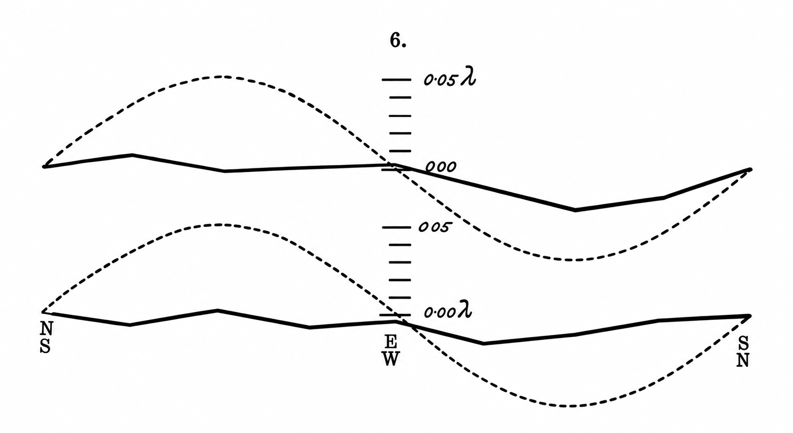
Falta el archivo H4.png en la carpeta de imágenes. Consulta la reproducción en el artículo original.
Nota. Reproducción de la figura 6 del artículo original de Michelson y Morley (1887). La curva superior corresponde al mediodía y la inferior a la tarde; las líneas discontinuas representan un octavo del desplazamiento teórico previsto. Imagen histórica de dominio público, consultable en American Journal of Science.
Consultar las mediciones originalesObservaciones de julio de 1887 · Tabla 1⌄
La tabla conserva las lecturas del micrómetro en distintas orientaciones, las medias de seis vueltas y su conversión a longitudes de onda. Las observaciones del mediodía y de la tarde se presentan por separado (Michelson & Morley, 1887).
Tabla 1
Observaciones originales realizadas al mediodía y durante la tarde
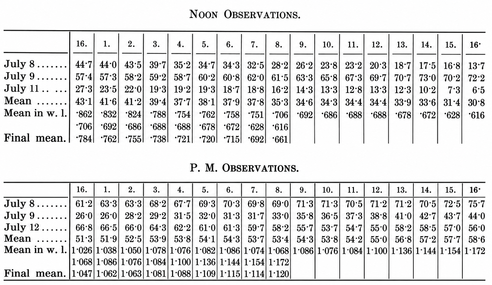
Nota. Reproducción facsimilar de las tablas originales de Michelson y Morley (1887). Las lecturas del micrómetro se registraron en divisiones del tornillo y se expresaron también en longitudes de onda.
Interpretación física. El giro del interferómetro no produjo la variación de franjas que predecía el modelo de éter estacionario. Este resultado puso en cuestión esa hipótesis concreta y motivó nuevas explicaciones sobre la propagación de la luz (Michelson & Morley, 1887); (Díaz López, 2011).
Impacto en la Física Moderna
El resultado de 1887 cuestionó el éter estacionario y exigió nuevas explicaciones sobre la propagación de la luz y el movimiento.
Las respuestas de FitzGerald y Lorentz
Para explicar la ausencia del desplazamiento esperado sin abandonar inmediatamente el éter, FitzGerald y Lorentz propusieron que un cuerpo en movimiento respecto de él se contraería en la dirección de su desplazamiento. Esta idea permitió reconsiderar los resultados y anticipó una transformación fundamental de la física clásica (Shankland, 1964).
Relación con la relatividad especial
En 1905, Einstein formuló una teoría sin necesidad de un éter como marco de reposo absoluto. Partió del principio de relatividad y de la constancia de la rapidez de la luz en el vacío. El resultado de Michelson y Morley es coherente con ese nuevo marco, aunque la investigación histórica no permite afirmar que fuese la causa única o directa de la formulación de Einstein (Einstein, 1905)(van Dongen, 2009).
Figura 14
Del problema del éter a un nuevo marco teórico
Nota. Esquema conceptual de elaboración propia a partir de Michelson y Morley (1887), Einstein (1905) y van Dongen (2009). Representa conexiones teóricas, no una causalidad histórica única.
Los dos postulados
Las leyes de la física son las mismas en todos los sistemas inerciales; además, la rapidez de la luz en el vacío tiene el mismo valor para todos los observadores inerciales. Estas ideas sustituyen la necesidad de identificar un sistema privilegiado (Einstein, 1905).
Consecuencias para el espacio y el tiempo
La relatividad de la simultaneidad, la dilatación temporal y la contracción de longitudes se deducen de la nueva descripción relativista. La contracción relativista no debe confundirse con la explicación original propuesta para conservar el éter (Einstein, 1905).
¿Cómo podría realizarse actualmente?
Herrmann y colaboradores (2009) compararon las frecuencias de resonancia de dos cavidades ópticas perpendiculares, montadas en un bloque de sílice fundida que giraba continuamente. Esta es una prueba moderna equivalente a la de Michelson y Morley: no busca detectar el éter ni reproduce su montaje original, sino comprobar si la rapidez de la luz depende de la dirección de propagación. No encontraron una anisotropía significativa y establecieron un límite del orden de Δc/c ≈ 10−17(Herrmann et al., 2009). Consultar el artículo completo, gratuito (PDF).
Instrumentos empleados
λ
Dos láseres Nd:YAG estabilizados
Emiten a 1064 nm; su frecuencia se ajusta a la resonancia de cada cavidad mediante control Pound–Drever–Hall.
⊥
Cavidades ópticas perpendiculares
Dos resonadores Fabry–Pérot de alta fineza en un bloque de sílice fundida; sus espejos reflejan repetidamente la luz.
↻
Plataforma de rotación de precisión
Una mesa con cojinete de aire gira el sistema aproximadamente una vez cada 45 s y permite registrar su orientación.
ν
Fotodiodo y medición electrónica
La superposición de señales láser produce una frecuencia de batido que se mide con electrónica de alta precisión.
◌
Cámara de vacío y aislamiento
El vacío, el control térmico y el aislamiento activo reducen fluctuaciones del aire y vibraciones.
⌁
Registro y análisis digital
Se guardan la frecuencia de batido, el tiempo y el ángulo para buscar una variación periódica reproducible.
Las Figuras 15 y 16 documentan los componentes reales y su disposición en la investigación de 2009.
Figura 15
Resonadores ópticos reales y principio de medida
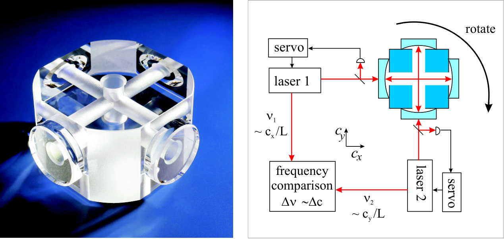
La imagen científica está disponible en el archivo gráfico del artículo. Para verla sin conexión, descarga la imagen original en PNG y guárdala como M1.png en Ilustraciones/General.
Nota. Reproducción de la figura 1 de Herrmann et al. (2009), publicada en Physical Review D. La fotografía de los resonadores fue tomada por E. Fesseler. La mitad izquierda es una fotografía del dispositivo; la derecha es el esquema presentado por los autores.
Figura 16
Sistema giratorio y cámara de vacío del experimento
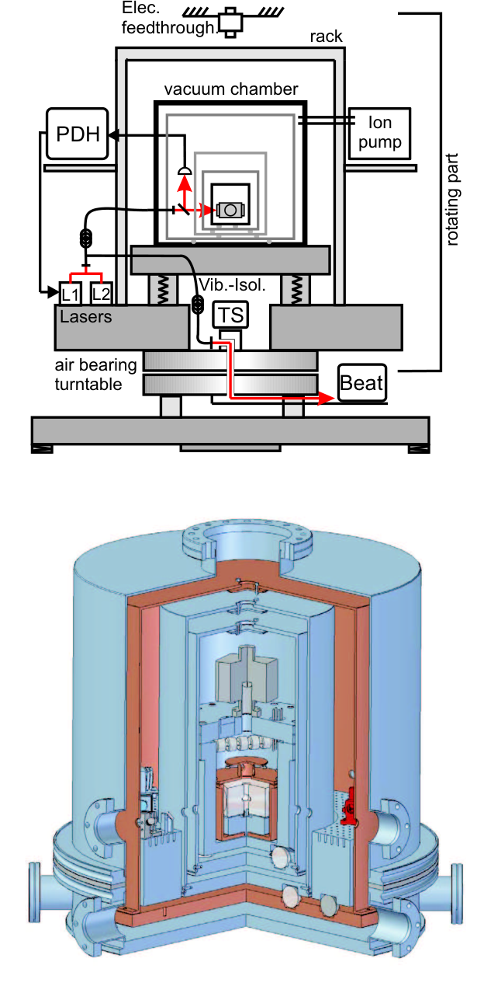
La imagen científica está disponible en el archivo gráfico del artículo. Para verla sin conexión, descarga la imagen original en PNG y guárdala como M2.png en Ilustraciones/General.
Nota. Reproducción de la figura 3 de Herrmann et al. (2009): esquema completo del sistema y vista seccionada de su cámara de vacío. La vista seccionada es un dibujo técnico del equipo, no una fotografía.
Construcción y funcionamiento
Cada láser se estabiliza respecto de una cavidad; los dos resonadores se montan perpendicularmente dentro de la cámara de vacío. La plataforma hace girar el conjunto, y un fotodiodo compara las frecuencias láser. La electrónica registra la señal junto con el ángulo de giro. Una anisotropía de la rapidez de la luz produciría una modulación de frecuencia ligada a la orientación (Herrmann et al., 2009).
νm = mc2L · Δν = ν1 − ν2
La frecuencia de resonancia depende de la rapidez de la luz (c), de la longitud de la cavidad (L) y del número entero de modo (m). Se mide la diferencia Δν entre ambos láseres (Herrmann et al., 2009).
Medición y diferencias respecto de 1887
La variable independiente es el ángulo de giro y la variable medida es la frecuencia de batido. Se controlan la temperatura, las vibraciones y la estabilidad del sistema. En 1887 se buscaba un desplazamiento de franjas mediante observación óptica; en 2009 se examinaba una modulación de frecuencia con adquisición digital, láseres y resonadores estables (Michelson & Morley, 1887)(Herrmann et al., 2009).
Aplicaciones actuales
La interferometría permite medir variaciones ópticas extremadamente pequeñas en experimentos y tecnologías actuales.
Detección de ondas gravitacionales: LIGO
El observatorio LIGO emplea láseres y dos brazos perpendiculares de 4 km para detectar variaciones diminutas en sus trayectos ópticos producidas por ondas gravitacionales. Aunque su finalidad difiere de la de Michelson y Morley, ambos utilizan la interferencia entre haces que recorren direcciones perpendiculares. La Figura 17 muestra la instalación de Hanford (LIGO Laboratory, s. f.).
Nota. Fotografía aérea de LIGO Hanford, 2023. Fuente: LIGO Laboratory, documento G2301207. Cortesía de Caltech/MIT/LIGO Laboratory.
Metrología dimensional
La interferometría permite calibrar bloques patrón y determinar longitudes mediante la comparación de fases ópticas. En la Figura 18 se presenta un interferómetro utilizado para estas mediciones en un laboratorio de metrología (CENAM, s. f.).
Nota. Interferómetro para calibración de bloques patrón. Fuente: Centro Nacional de Metrología, Laboratorio de Interferometría de Bloques Patrón (s. f.).
Ingeniería óptica
La interferencia permite identificar irregularidades muy pequeñas en espejos y otras superficies ópticas antes de utilizarlas en instrumentos de precisión. La Figura 19 muestra la inspección de un espejo mediante un equipo interferométrico (European Space Agency, 2017).
Nota. Ensayo de la forma superficial de un espejo torneado con diamante. Fotografía: S. Muirhead. Fuente: European Space Agency (2017).
Pruebas de física fundamental
Los resonadores ópticos de gran estabilidad permiten comprobar si la velocidad de la luz presenta variaciones según la orientación del instrumento. La Figura 20 muestra el sistema de cavidades perpendiculares empleado por Herrmann y colaboradores en una prueba moderna de la invariancia de Lorentz (Herrmann et al., 2009).
Figura 20
Resonadores ópticos para pruebas de invariancia de Lorentz
Nota. Fotografía y esquema de las cavidades ópticas; figura 1 de Herrmann et al. (2009), Physical Review D, 80, 105011. Versión disponible en arXiv.
Conclusiones
Michelson y Morley diseñaron una prueba cuantitativa para detectar el movimiento de la Tierra respecto de un éter estacionario. El desplazamiento sistemático de franjas previsto por ese modelo no apareció con la magnitud esperada.
El resultado cuestionó una interpretación clásica de la propagación de la luz y motivó nuevas explicaciones, desde las propuestas de FitzGerald y Lorentz hasta una descripción del espacio y del tiempo que no requiere un marco de reposo privilegiado (Michelson & Morley, 1887)(van Dongen, 2009).
Su importancia continúa vigente: el mismo objetivo de comparar propiedades de la luz en distintas direcciones se investiga hoy mediante cavidades ópticas y mediciones de frecuencia de muy alta precisión (Herrmann et al., 2009).
El valor del experimento reside tanto en su resultado como en la manera de confrontar una hipótesis física con una medición reproducible.
Referencias
American Physical Society. (2007, 1 de noviembre). November 1887: Michelson and Morley report their failure to detect the luminiferous ether. APS News.
Herrmann, S., Senger, A., Möhle, K., Nagel, M., Kovalchuk, E. V., & Peters, A. (2009). Rotating optical cavity experiment testing Lorentz invariance at the 10⁻¹⁷ level. Physical Review D, 80(10), Article 105011. https://doi.org/10.1103/PhysRevD.80.105011. Versión gratuita: arXiv (PDF completo)
LIGO Laboratory. (s. f.). What is an interferometer?LIGO Caltech.
Michelson, A. A., & Morley, E. W. (1887). On the relative motion of the Earth and the luminiferous ether. American Journal of Science, s3-34(203), 333–345. https://doi.org/10.2475/ajs.s3-34.203.333
Díaz López, A. C. (2011). El experimento de Michelson y Morley: Una propuesta didáctica para la enseñanza de la relatividad especial. Revista Científica, volumen extraordinario, 127–132. Revista Científica, Universidad Distrital. [Documento facilitado en la conferencia].
Martín del Rey, M., & Martín del Rey, Á. (2009). La influencia del experimento de Michelson y Morley en la teoría de la relatividad. Ciencias, (94). Revista Ciencias, UNAM.
van Dongen, J. (2009). On the role of the Michelson–Morley experiment: Einstein in Chicago. Archive for History of Exact Sciences, 63, 655–663. https://doi.org/10.1007/s00407-009-0050-5.
Centro Nacional de Metrología. (s. f.). Laboratorio de Interferometría de Bloques Patrón [Fotografía y descripción del laboratorio]. CENAM.
European Space Agency. (2017, 20 de marzo). Measuring the surface shape of a diamond turned mirror [Fotografía de S. Muirhead]. ESA.